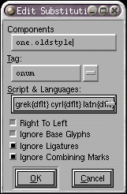
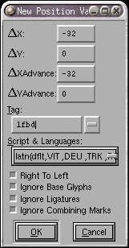
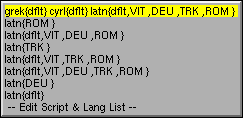
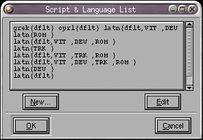
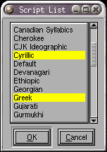
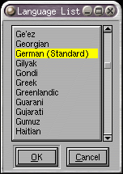

Glyph Info
 Glyph Info
Glyph Info
- Encoding and Unicode data
- Glyph Comment
- Simple Glyph Positioning (GPOS)
- Pair-wise Glyph Positioning other than kerning (GPOS)
- Glyph Simple Substitution (GSUB, morx)
- Glyph Alternate Substitution (GSUB)
- Glyph Multiple Substitution (GSUB)
- Glyph Ligature Substitution (GSUB, morx)
- Components
- Counter Masks
This dialog allows you to set the name and unicode encoding of a given glyph. If you know the name of the glyph then FontForge can tell you the encoding (if you press Set From Name), similarly if you know the encoding then FontForge can tell you the name.
The name field contains a pull down list with (possibly) several synonyms for the name of this unicode code point.
The Glyph class field is for the opentype 'GDEF' table. You can usually leave
it set to automatic. FontForge will then figure out the class, and whether
it should be output into GDEF. You can see what FontForge does in
View->Show ATT.
 You
can assign an arbitrary (unicode) comment to the glyph.
Simply type any text into this field. The comment is for your use, it will
not go into any generated fonts. You may also assign a color to a glyph to
make it stand out in the font view.
You
can assign an arbitrary (unicode) comment to the glyph.
Simply type any text into this field. The comment is for your use, it will
not go into any generated fonts. You may also assign a color to a glyph to
make it stand out in the font view.
 There
are 6 separate sub-dialogs to help you edit the
features of the GPOS and
GSUB tables (some of these data can be converted into various of Apple's
AAT tables, particularly 'morx'). The first of these is the alternate
position dialog which allows you to associate certain
modifications to a glyph's metrics with a feature in the GPOS table.
There
are 6 separate sub-dialogs to help you edit the
features of the GPOS and
GSUB tables (some of these data can be converted into various of Apple's
AAT tables, particularly 'morx'). The first of these is the alternate
position dialog which allows you to associate certain
modifications to a glyph's metrics with a feature in the GPOS table.
In the example at right the 'fwid' feature (full width) adds 400 units to the glyph's advance width and moves it horizontally by 200 units.
A new entry in the list may be created by pressing the [New] button and a dlg will pop up with fields for the metrics you can change. It will also have a field for a feature tag, and a set of check boxes for flags (these flags are not relevant here, but are included as an exercise in asinine completeness.
The [Delete] and [Edit] buttons should be fairly self-explanatory. [Copy] and [Paste] work as expected too. You can also paste something copied here into the font view (if you wish to have the same position information available in a large block of glyphs).
The pairwise positioning sub-dialog allows you to
change the positions of two glyphs when they occur next to one another. The
most common example of that is kerning (which is better done elsewhere, the
metricsview for example, but it can be done here if you really want to do
that).
 A simple
substitution replaces one glyph with another.
Here the glyph "one" has a substitution to "onesuperior" when the 'sups'
(Superscript) feature is invoked.
A simple
substitution replaces one glyph with another.
Here the glyph "one" has a substitution to "onesuperior" when the 'sups'
(Superscript) feature is invoked.
FontForge recognizes a special feature tag ' RQD' to indicate that this feature is required for the given script/language. Such a feature will always be applied.
You can generate a substitution most easily by dragging a glyph from the font view and dropping it here (you will then be prompted for a feature tag for the substitution table.
The multiple and alternate substitution sub-dialogs
are very similar to this one except that they can take multiple glyph names.
In a multiple substitution sub table each glyph is replaced by several other
glyphs (sort of the reverse of a ligature), while in the alternate substitution
sub-dialog each glyph is to be replaced by exactly one glyph from a list
and the user is to be given a choice as to which glyph is to be chosen.
 The
ligature field allows you to tell FontForge that the
current glyph is a ligature composed of several other glyphs. FontForge will
often be able to fill this in with the right default value, but occasionally
you may want to change it. The value should be a list of postscript glyph
names separated by spaces. If a glyph may be viewed as two different ligatures
then they may both be specified in different lines. For example "ffi" may
be viewed as a ligature of "f" "f" and "i" or of "ff" and "i".
The
ligature field allows you to tell FontForge that the
current glyph is a ligature composed of several other glyphs. FontForge will
often be able to fill this in with the right default value, but occasionally
you may want to change it. The value should be a list of postscript glyph
names separated by spaces. If a glyph may be viewed as two different ligatures
then they may both be specified in different lines. For example "ffi" may
be viewed as a ligature of "f" "f" and "i" or of "ff" and "i".
In the example at right the "m" glyph is one of a set of flags stored in the GSUB table. It indicates that combining marks should be ignored when looking for the ligature.
The GPOS and GSUB tables allow further refinements
of ligatures. You may classify a ligature as: Standard, Required, Discretionary,
Historic or Fraction. Required ligatures must be replaced, Standard ligatures
should be, Discretionary ones may be, and Historic ones should only be used
int appropriate circumstances. The pull down list on the Tag field allows
you to pick what type of ligature this should be.
 In complicated Asian glyphs, postscript has a mechanism for controlling the
width of counters between stems. These are called
counter mask
hints
In complicated Asian glyphs, postscript has a mechanism for controlling the
width of counters between stems. These are called
counter mask
hints .
In Latin, Cyrillic, Greek fonts only glyphs like "m" are allowed to have
counter masks, and only in very controlled conditions. See the description
of counter masks.
.
In Latin, Cyrillic, Greek fonts only glyphs like "m" are allowed to have
counter masks, and only in very controlled conditions. See the description
of counter masks.
Some glyphs (ligatures, accented glyphs, Hangul
syllables, etc.) are built up out of other glyphs (at least according to
unicode). This pane of the dlg shows the components that Unicode says make
up the current glyph, if those components are in the font then you can use
FontForge's Element->Build->Build Accented or
Element->Build->Build Composite commands to create the current
glyph. The information displayed here is informative only, you may not change
this field directly (it changes when you change the unicode value or glyph
name associated with this glyph).
The Next and Prev buttons allow you to move from one glyph to the next (if, for example, you need to enter encodings for a range of glyphs).
The Done (or Cancel) button only Cancels work in the current glyph. If you
have already used Next or Prev then those earlier changes will not be
cancelled.
Feature Tag Dialog
|   |
These two dialogs allow you to specify an otf feature tag and all the other impedimenta that go along with it. They are used by Glyph Info (above) to specify substitutions, positions, and ligatures, as well as by Font Info to specify anchor classes and contextual features.
You must either specify an opentype feature tag (a four glyph tag like 'liga' -- these are defined by Microsoft & Adobe, see the section on GPOS and GSUB for more information), or an apple feature/setting value (Something like <2,2> where the first number is the feature and the second the setting for that feature). These features tell the opentype (or ATSUI) engine what this substitution is supposed to do.
CAVEAT: OpenType engines will only apply features which they believe are appropriate for the current script (in Latin scripts, Uniscribe will apply 'ccmp' and 'liga' (character composition/decomposition and ligature) features but will not apply 'medi' (substitution with a medial glyph variant) features because Latin doesn't need such a feature -- at least so they claim). Even worse, some applications may choose not to apply any features ever (Word does not do ligatures in latin). Microsoft tries to document what features they apply for which scripts in Uniscribe, but that isn't very helpful since Word and Office have quite different behavior than the default.
In addition you must specify a set of flags which control the behavior of the feature. If your feature is to be used in right to left text then select that flag. If your feature is to be used to combine glyphs even if there are intervening mark glyphs (accents and such) then select Ignore Combining Marks. If you are creating an Indic font then you will probably need to create mark classes (with Element->Font Info->Mark Classes) which will be used with the Process Marks option to specify indic rearrangement.
And a collection of scripts and languages for which the substitution will be active. In the example above the substitution is active for the greek script and the default language (which here means all languages as none have been singled out for special treatment), the cyrillic script and the default language, and the latin script and several languages.

Clicking on the pulldown list produces a list of choices that are currently used in the font. The last choice allows you to change or add to this list.
Most of the time you will want to specify that your item should be active in just one script but in all languages of that script. For instance the "fl" ligature should probably always be applied in the latin script, no matter what the language is (except Turkish where ligatures should be explicitly disabled), however there is no point in having it active for cyrillic users as they will never see that combination of glyphs. On the other hand the es-zet ligature (German double-s, ß) has fallen by the wayside in all (I think) languages but German so that ligature should only be active for the latin script, german language.
And there are some glyphs that don't fall into one single script. The same digits are used for latin, cyrillic, greek, hebrew, (sometimes arabic) and many other script systems, so any ligatures of the digits (such as fractions) should be available in all script systems.
The script names used by FontForge are those specified by Microsoft and Adobe for opentype. These are almost compatible with ISO 15924 except that all opentype scripts are in lower case (while those in ISO 15924 all start with capital letters) and short script names (such as "Lao") are converted to 'lao ' rather than 'Laoo'. I have extended the set of opentype scripts with many of those in ISO 15924 by making them all lower case (I have not used everything from ISO 15924 because it contains script variants for things which I consider to be one script (eg. fraktur has a separate script tag, but I consider it to be latin).
The Script Language Dialog
This dialog shows all the script and language combinations which are in use in the current font. You may add a new combination or change an old one by pressing the obvious buttons.
If you want to specify a script or language that FontForge doesn't know about, then hold the control key down when pressing the [New...] or [Edit] buttons and you will get an unparsed dlg which will allow you to enter whatever you like (OpenType does not give a tag for the default language (it is has a special representation which does not involve tags), but for the sake of consistency I have assigned it the tag of 'dflt'. No 'dflt' tags will appear in the output font, instead they will be converted to the appropriate representation for the default language).
The language names used by FontForge are those specified by Microsoft and Adobe for opentype.
Note: In most cases the order of scripts in the list is irrelevant, but kerning
uses the initial script to determine the direction of the kern pair. So if
you have kerning on the digits, and want those to be active in both latin
and hebrew, you must use the unparsed dlg which allows you to order the scripts
yourself (or add a greek, or cyrillic script to the list (something that
comes before hebrew in alphabetic order and is left to right)).
The Script Dialog
This dialog shows all the scripts currently activated in this script-language collection. If you want to add a new script to the collection hold the control key down while clicking on the script. New scripts are added with the "default" language selected. If you want finer control over languages (ie. want to specify a language other than default) then double click on a script and you will get a dialog of languages.
The Language Dialog
This shows all languages active in the current script in the current
script-language collection. Some languages are not meaningful in a given
script (but I don't know enough to know which to remove so I include all
possible languages and apologize for extraneous information). Use the control
key to select multiple languages. At least one language must be
specified.
See Also: